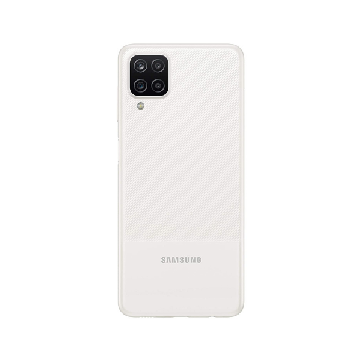
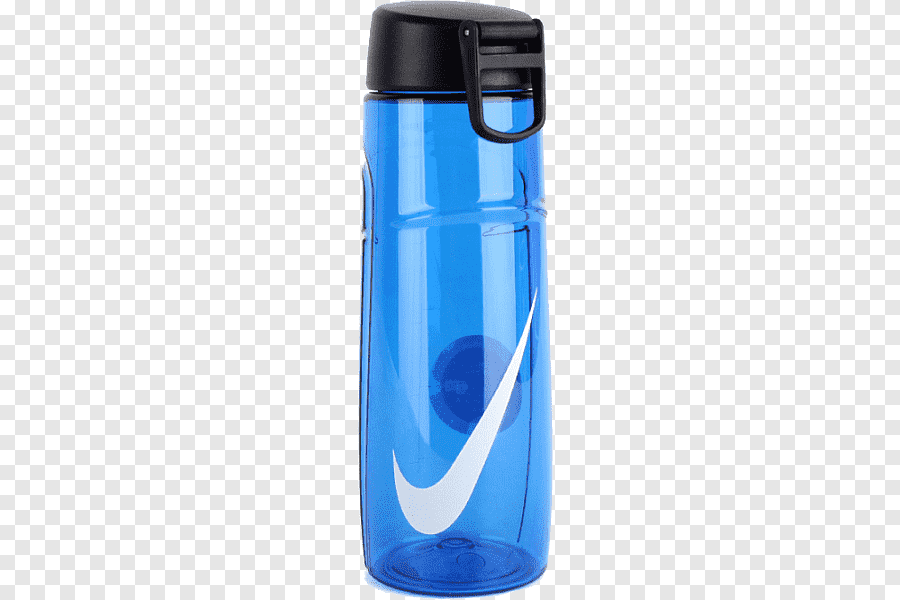
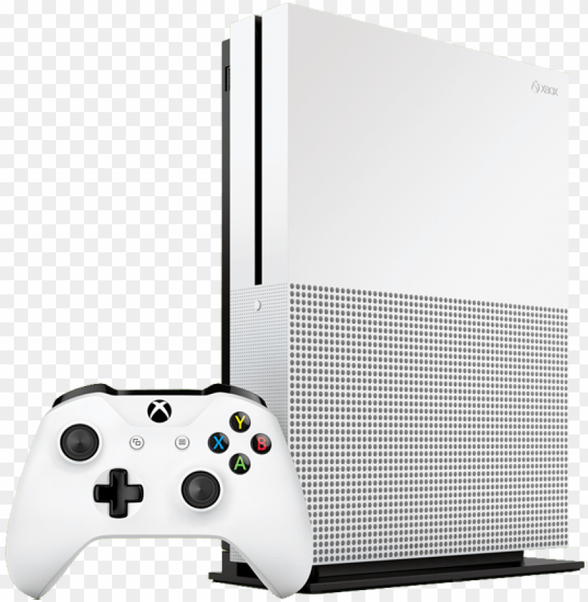
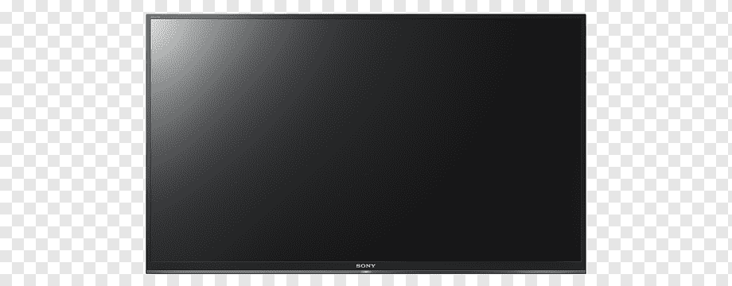

Case Study between Google Lens and MobileNet
Google Lens

VS
MobileNet
- Test Image -
Output on Google Lens - Budgie
Output on Mobilenet Model - Blue Budgie
Result -
Google Lens Is More Accurate
- Test Image - 
Output on Google Lens - Mobile
Output on Mobilenet Model - Samsung Mobile
Result -
Google Lens Is More Accurate
- Test Image - 
Output on Google Lens - Water Bottle
Output on Mobilenet Model - Nike Water Bottle
Result -
Google Lens Is More Accurate
- Test Image - 
Output on Google Lens - Console
Output on Mobilenet Model - Xbox 1
Result -
Google Lens Is More Accurate
- Test Image - 
Output on Google Lens - Tv
Output on Mobilenet Model - Samsung tv
Result -
Google Lens Is More Accurate
I have tested 5 images
MobileNet has predicted none of them correctly.
And Google Lens has predicted all of them correctly.
So according to my case study Google Lens is more Accurate